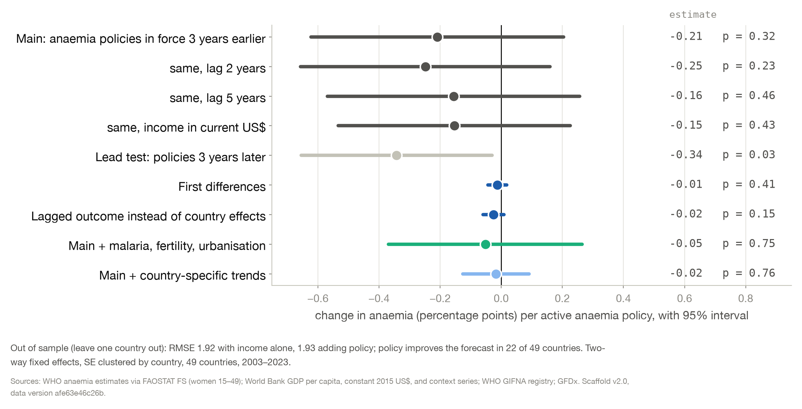
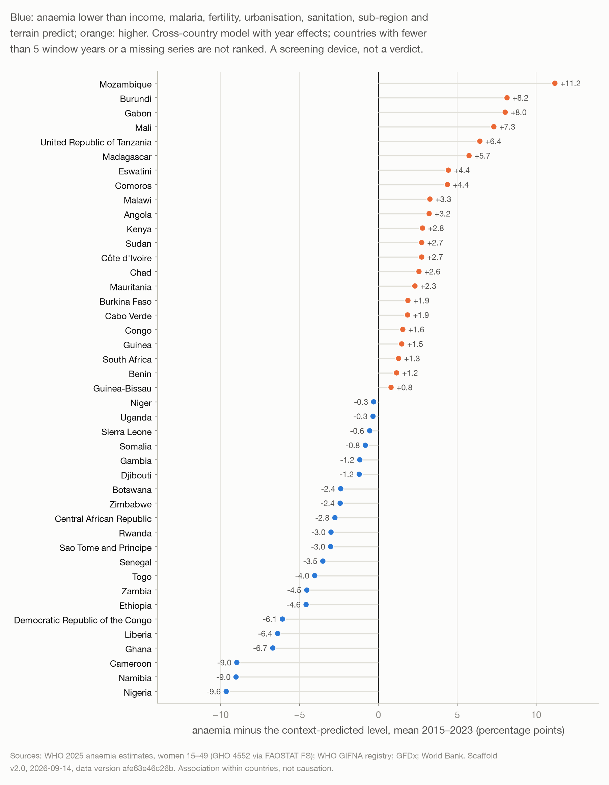

The scaffold, source to result
Twelve public datasets from eight organisations go in; one guarded script turns them into a single country-year table; seven models read that table; every number that comes out is tagged with the script and the statistic that produced it. This page follows the data through, source by source and model by model. The Method page explains why each choice was made.
The flow
Read it top to bottom. Each source arrives as a pinned file with a provenance record or through a committed pull script, is joined on a country code, and lands in one grid. The panel becomes a modelling frame, the frame feeds the seven models, and the models write tagged results. Plum marks the headline path: the outcome series and the main model.
What happened to each source
Every join uses a code, never a name. Columns named out_ are candidate outcomes and feat_ candidate regressors; the data dictionary next to the panel lists all 174 with their coverage.
| Source | How it arrived | What the scaffold does with it | Columns | Where it is used |
|---|---|---|---|---|
| WHO anaemia estimates, women 15–49 (GHO indicator 4552), republished in FAOSTAT's food security suite as item 21043 | Pinned parquet of the July 2026 release, byte-identical copy with its hash | Joined on FAOSTAT area code; 49 countries, 2000–2023, one modelled value per country-year | out_anaemia_wra_fs_pct | The outcome of every model; the map and the trend figures |
| UNICEF women's nutrition database (August 2025 workbook: WHO anaemia, NCD-RisC weight) | Pinned workbook with its hash | Four sheets read and joined on ISO3; the anaemia sheet is checked to be identical to the WHO series and kept only for that check | out_anaemia_pregnant_pct, out_women_underweight_pct, out_women_overweight_pct, out_anaemia_wra_unicef_pct | Outcome swaps in the ladder, the women's index, the concern score |
| FAOSTAT food security suite: low birthweight, stunting, wasting, overweight under five, exclusive breastfeeding | Pinned parquets, July 2026 release | Joined on area code; five child series | out_lbw_pct, out_stunting_u5_pct, out_wasting_u5_pct, out_overweight_u5_pct, out_ebf_0_5mo_pct | Low birthweight is an outcome swap; the rest stay descriptive, the chain's later links |
| FAOSTAT cost and affordability of a healthy diet (CAHD, release 7S2026) | Pinned parquet | Three items, 2017–2025, 45 countries (none for Eritrea, Sudan, Somalia, Zimbabwe) | feat_cohd_ppp_per_day, feat_pua_pct, feat_nua_million | Unaffordability as a sub-period control from 2017 |
| FAOSTAT food insecurity (FIES) | The annual pull returned no rows for the region, so three-year averages were rebuilt from the cached release and assigned to the middle year | Six series, 2015–2024, 40 countries; the women-minus-men gap is derived in the frame | feat_fies_severe_*_3yr, feat_fies_mod_sev_*_3yr (female, male, total) | Severe food insecurity and the gender gap as sub-period controls from 2015 |
| UN IGME child mortality, 2025 round | Pinned CSV | Joined on ISO3, 2000–2024, both sexes | out_nmr_per1000, out_imr_per1000, out_u5mr_per1000 | Kept for the last link of the chain; descriptive only, not modelled |
| World Bank WDI | GDP per capita in constant 2015 US$: pinned API pull with provenance. Seven context series pulled by a committed script (inputs/pull_wb_context.py). The team's file supplies GDP in current US$ (its header said constant), unemployment and hospital beds | Pulls joined on ISO3, the team file on ISO2; both incomes are logged in the frame | feat_gdp_pc_constant_2015_usd, feat_gdp_pc_current_usd, feat_malaria_incidence_per1000, feat_fertility_rate, feat_urban_pct, feat_hiv_prev_pct, feat_sanitation_basic_pct, feat_employment_pop_pct, feat_health_exp_pc_usd, feat_unemployment_pct, feat_hospital_beds_per1000 | Log income in every model; the context rows of the ladder, the context ranking, the held-out context ladder and the double-ML sidebar; the team's rows; sub-period rows |
| WHO GIFNA registry: policies (944 rows), programmes and actions (1,803), mechanisms (131) | Per-country exports of 3–5 September combined by the feature-table owner's script and read directly; the team's feature table (76 composite columns) merged unchanged | Controlled fields only (topics, theme, target group, micronutrient, type), matched token by token against 47 patterns in 11 topic clusters. A record counts while active, start to end year, open end meaning still active; questionnaire rows are placed in their survey window; 109 programme and 35 mechanism rows without a date are excluded. Per cluster: a stock, its log, and an ever-adopted flag | 60 feat_gd_* and 76 feat_gifna_*; first-adoption years in events.csv | The main dose (feat_gd_stock_anaemia_policies, lagged three years), seven alternative exposures, the specification curve, held-out prediction, the tails contrast, the anaemia-policy event study |
| Global Fortification Data Exchange legislation | Pinned CSV from a dataset snapshot, 45 countries | The year each food vehicle was first mandated | events.csv: wheat-flour (27 countries) and maize-flour (11) mandate years and status | The wheat-flour mandate event study |
| DHS Program, surveys with women's haemoglobin testing | Pinned API pull, 139 survey rows, country names mapped to ISO3 | A 1 in each country-year with a survey, 0 elsewhere | feat_dhs_anaemia_survey | The survey-anchored ladder row (80 country-years, 33 countries) |
| WHO PCT databank, soil-transmitted helminths | Workbook downloaded 12 September, pinned with provenance | National deworming coverage among school-age children; where a year has several treatment rounds the best round counts; 0 where a country required treatment and reported none | feat_sth_pc_coverage_sac_pct (2003–2024, 47 countries) | The implementation rows of the ladder, as exposure and as control, and a sub-period row: the one delivered-coverage series next to the paper record |
| Nunn & Puga terrain (2012) | Pinned CSV from the public dataset | Three time-invariant variables per country | events.csv: geo_rugged, geo_tropical, geo_dist_coast | The context ranking model only |
Country-code lookup (inputs/country_codes_ssa.csv) | Committed with the code | ISO3, ISO2, M49, FAOSTAT area code and display name for the 49 countries (UNICEF's Eastern and Southern plus West and Central Africa); the team's country list is cross-checked, 48 of 49 names match, one has an encoding fault | the keys iso3, year, country | Every join |
What went into each model
All seven read the same frame, so a difference between results is a difference in design, not in data. The outcome is the WHO anaemia series in every case; "the dose" is the number of anaemia-cluster policies in force three years earlier.
| Model (script) | Policy input | Other inputs and structure | Sample | Result, and where it lives |
|---|---|---|---|---|
Dose ladder (02_fe_model.py) | The dose | Log income (constant US$); country and year effects; standard errors clustered by country with a wild cluster bootstrap. 38 check rows swap the lag (2, 5) and the income series, add a three-year lead, country trends, first and five-year differences, a lagged outcome, malaria, fertility, urbanisation, HIV, sanitation, unemployment, employment, deworming coverage, seven alternative exposures, five outcome swaps with adjusted p-values, and survey-anchored years only. 12 sub-period rows add food insecurity, the gender gap, diet unaffordability, hospital beds, health spending and deworming on their own years. Equivalence and minimum-detectable-effect bounds against a pre-specified smallest effect of interest | 994 country-years, 49 countries, 2003–2023 | −0.21 pp per policy, interval −0.62 to +0.20; the lead −0.34, −0.66 to −0.03; the trend row −0.02 → fe_coefficients.csv, fe_sensitivity.csv, fe_subsample.csv, stats/02_fe.json; the ladder figure |
Event studies (02b_event_study.py) | The adoption year of the first dated anaemia policy; the year of the wheat-flour mandate, both from events.csv | Log income; window four years before to five after, reference the year before adoption; three estimators: two-way fixed effects, two-stage difference-in-differences with a country bootstrap, local-projections difference-in-differences; the negative-weight share of the naive estimator; a pre-trend slope adjustment | Anaemia policy: 31 adopters, 3 never-adopters, 15 early adopters excluded (775 rows). Wheat mandate: 26 and 23 (1,135 rows) | Naive −0.94 (p 0.08, 27% negative weights); two-stage +0.10; local projections −0.08; no break after wheat mandates → event_study.csv, event_att.csv; the event-study figure |
Specification curve (02c_spec_curve.py) | Seven exposures: the dose, its log, the team composite, the all-file stock and its log, ever any anaemia policy, ever any fortification record | Four estimators (fixed effects, with country trends, first differences, lagged outcome) × two income series × lags 2, 3 and 5 × with and without the context block | 336 fits on the frame | Median −0.02 pp per within-country SD; 7% of intervals exclude zero → spec_curve.csv; the curve figure |
Held-out prediction (03_loco.py) | The dose; the team composite; all eight exposures | Each country predicted by a model fitted to the other 48, on within-country deviations with year effects carried over; nested models: year effects, then + income, + the dose, + all exposures; a context ladder income → + context → + dose; a bootstrap on the error difference | Common sample 994 rows; context ladder 931 rows, 46 countries | Error 2.50 → 1.91 (year effects) → 1.92 (income) → 1.93 (dose); the dose helps in 22 of 49 countries → loco_rmse.csv, loco_per_country.csv, loco_predictions.csv |
Context ranking and tails (04_residuals.py) | None in the ranking; all eight exposures in the tails contrast | Cross-country regression of levels on year effects, sub-region, log income, malaria, fertility, urbanisation, basic sanitation, ruggedness, tropical share and distance to coast; the residual averaged over 2015–2023 for countries with at least five years; an income-only ranking beside it | 1,046 rows, 45 countries; 43 ranked; eight in each tail | Context explains 81% of level differences, income alone 6%; the tails carry 4.5 vs 2.8 policies in force (p 0.12) → residuals_by_country.csv, deviants_policy_stock.csv, deviant_contrast.csv, deviants_timeline.csv; the ranking and map figures |
Concern score (08_concern_score.py, sidebar) | None | Four women's series (anaemia in all and in pregnant women, underweight, overweight): per series 0 if improved, 1 if it started in the worst quarter, 2 if it worsened, plus the percentile; equal weights; 500 random-weight draws to test stability | 49 countries, 2000–2023 | Burundi, Somalia, Senegal, Gambia, Niger on top; rank correlation 0.997 under random weights → concern_score.csv |
Double machine learning (09_dml_sidebar.py, sidebar) | The dose | Log income, malaria, fertility and urbanisation as nuisance functions fitted by random forests; five country-grouped folds, cross-fitted | 931 rows, 46 countries | +0.08 pp (p 0.59): a same-sign check, nothing more → stats/09_dml.json |
Descriptives (01_prep_frame.py, 05_figures.py) | The dose, undated | The panel as it is: levels, changes, policies in force by year | 49 countries, 2000–2023 | Regional mean 44% → 37% → 39%; 37 of 49 higher in 2023 than in 2015; anaemia policies in force 17 → 158 → the trend, map and dose-timeline figures |
What came out
Where it is most concerning
The unweighted mean across the 49 countries fell from 44% in 2000 to 37% in 2015, then rose to 39% by 2023; 37 of 49 countries are higher in 2023 than in 2015. Levels run from 16% in Rwanda to 60% in Gabon. Income alone explains under five per cent of the spread between countries. [01_frame; 04_residuals]
The policy record does not move anaemia, measurably
One more policy in force is followed three years later by −0.21 points, interval −0.62 to +0.20, and the estimate stays at zero across lags, controls, estimators and 336 specifications. The lead test is the one row off zero: adoption follows trends. Benefits larger than about half a point per policy are ruled out. [02_fe; 02b_event; 02c_spec; 03_loco]
Who beats their context, and it is not the paper trail
Context explains 81% of the differences in levels. Nigeria, Namibia, Cameroon, Ghana, Liberia, DR Congo, Ethiopia and Zambia sit below what their context predicts; Mozambique, Burundi, Gabon, Mali, Tanzania, Madagascar, Eswatini and Comoros above. The two groups report the same policy record. [04_residuals]


Obstacles, and what they changed
Undated programme rows made the dose policies only. Modelled outcomes made a survey-anchored re-run the honest check. The mislabelled income file became a pinned World Bank pull with provenance. The empty food-insecurity series became three-year averages. The one delivery series we could find, deworming coverage, went in as an implementation contrast.
Where every number comes from
The report results/RESULTS.md tags each number [E:script→key]; the key lives in results/stats/<script>.json, written by the script named. The panel's data version, afe63e46c26b, is the hash of the panel and of every input that built it, recorded in MANIFEST.json. Change one input and the version changes with it.